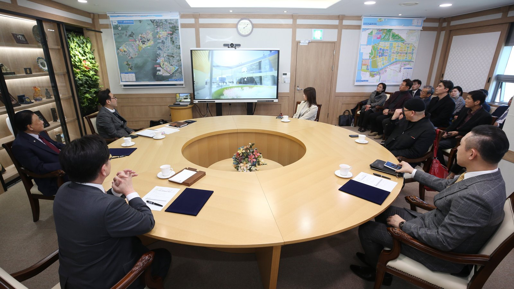

인천경제청 "송도 에디슨 박물관 빼지 않는다…C1블록 도서관과 함께 검토"
A12블록 세대수는 미확정, 690가구설엔 "출처 불명"
AI경제저널=김갑봉 기자 | 인천경제자유구역청이 송도 6공구 A12블록의 에디슨 과학교육 박물관을 사업에서 빼지 않는다고 밝혔다. 다만 박물관을 같은 6공구 C1블록에 들어설 복합문화도서관과 함께 짓는 방안을 검토 중이라고 했다. 인천경제청은 5일 주민단체 반발을 다룬 보도에 대한 설명자료를 내고 이같이 설명했다.

"박물관 없는 설계안 요청한 적 없다"
설명자료는 네 가지를 밝혔다. 첫째, C1블록 복합문화도서관과 A12블록 박물관을 집객시설 복합화 차원에서 함께 조성하는 방안을 검토하고 있다. 둘째, 그래서 박물관을 없애는 것이 아니라 C1블록에 도서관과 함께 짓는 방안을 검토하고 있다.
셋째, A12블록 사업시행사인 ㈜송도뮤지엄파크SPC에는 이런 검토 상황만 공유했다. 박물관이 없는 경우의 개선 설계안을 요청한 적은 없다고 했다. 넷째, 사업시행사는 A12블록 공동주택 세대수를 아직 확정하지 않았다. 532가구를 690가구로 늘린다는 내용은 출처가 분명하지 않다고 밝혔다.
2년 전 약속은 「A12블록 호수변 박물관」
이 사업은 2023년 5월 양해각서에서 출발했다. 인천경제청은 당시 송도 6공구 호수 주변에 문화·관광·집객 시설이 부족하다며 박물관 조성에 나섰다. A12 공동주택 부지 일부를 줄여 문화관광시설 용지로 바꿀 계획이라고도 밝혔다.
2025년 2월에는 기본협약을 맺었다. 6공구 호수변 A12블록 5만3904㎡에 박물관과 유현준 테라스 타운을 함께 짓는 사업이다. 2029년까지 총사업비는 6713억 원으로 추산됐다. 박물관운영SPC가 경제청으로부터 박물관을 임대해 50년 이상 운영하는 구조다. 인천경제청은 그해 하반기에 본협약을 맺겠다고 했다.
설명자료가 송도 주민에게 말하는 것
첫째, 박물관의 자리가 바뀔 수 있다. 설명자료는 박물관을 빼지 않는다고 했지만, 검토안대로라면 박물관은 A12블록이 아니라 C1블록에 들어선다. 2년 전 협약의 그림은 호수변 A12블록 안의 박물관과 테라스 타운이었다.
둘째, 땅의 쓰임새가 남은 물음이다. 인천경제청은 박물관을 위해 A12 공동주택 부지 일부를 문화시설 부지로 바꾸겠다고 했다. 박물관이 C1블록으로 가면 그 부지를 어떻게 쓸지, 세대수는 어떻게 될지가 함께 정해져야 한다. 설명자료는 세대수가 확정되지 않았다고만 밝혔다.
셋째, C1블록의 시계다. C1블록(송도동 399-8)은 2010년 문화시설용지로 정해진 뒤 13년 동안 개발이 미뤄진 땅이다. 인천경제청은 2023년 1월 송도랜드마크시티유한회사의 개발이익으로 복합문화도서관을 짓겠다며 2026년 준공·개관을 목표로 내걸었다. 올해가 그 목표 연도다.
넷째, 발표에 없는 것이다. 이번 설명자료는 2025년 하반기로 잡았던 A12블록 본협약의 체결 여부를 밝히지 않았다. 박물관을 C1블록으로 옮길 때 사업비와 운영 구조가 어떻게 바뀌는지도 담지 않았다.
담당은 인천경제청 서비스산업유치과(032-453-7392)다.
참고문헌
- 인천경제자유구역청 서비스산업유치과(2026). 「송도 박물관 사업 빠지고 아파트만 늘어나」… 주민단체 반발 보도 관련 설명자료. 2026년 11월 5일(weminpress 수신 붙임 hwpx).
- 인천경제자유구역청 서비스산업유치과(2023). 송도 6공구에 에디슨 박물관·유현준 테라스타운 조성된다(보도자료). 2023년 5월 11일. https://www.ifez.go.kr/main/pst/view.do?pst_id=noti03&pst_sn=664418
- 인천경제자유구역청 서비스산업유치과(2025). 송도 에디슨 박물관․유현준 테라스 타운 기본협약서 체결(보도자료). 2025년 2월 26일. https://www.ifez.go.kr/main/pst/view.do?pst_id=noti03&pst_sn=667650
- 인천경제자유구역청 개발계획총괄과(2023). 13년간 개발 지연 복합문화도서관 건립 「시동」(보도자료). 2023년 1월 29일. https://www.ifez.go.kr/main/pst/view.do?pst_id=noti03&pst_sn=663921
[사진 출처]
- [사진1] 인천경제자유구역청 홍보센터 행사사진 「A12BL 사업기본협약 체결식」, 공공누리 제1유형, 2025.2.26., https://www.ifez.go.kr/promote/pst/view.do?pst_id=event_photo&pst_sn=667662
관련기사
- 청라 영상단지 준공 2031년으로 4년 늦춰…IFEZ, 콘텐츠·바이오로 판 짠다
- 인천 공인중개사 연수교육 미수료자, 12월까지 6차례 추가 교육
- 송도트램 사업비 68% 불어난 채…2027년 예타 재도전
저작권자 © AI경제저널 무단전재 및 재배포, AI학습 및 활용 금지